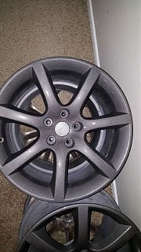
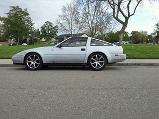
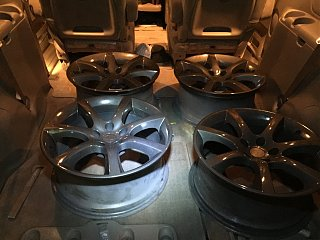
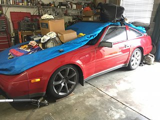

-
Curious if anyone is running theses. Seems all the pic links are broke since photobucket death. These are 18". Curious if the Z wheels center caps will fit as well.
My search said some are running adapters some are not. Last edited by JSM; 11-13-2017, 07:46 AM. -
I have a beater set of g37 wheels i use for racing. They sit inwards quite a bit though. Definitely need spacers. Its like the car is on stilts.
Project Black Betty

-
Do you like the way it looks and handles? Or would you not recommend it? Do you have to run adapters in the back as well?Originally posted by mizagyu View PostLast edited by JSM; 11-13-2017, 01:38 PM. -
Rears definitely need adapters. These sit in further than even stock wheels. Honestly, I'm not the greatest fan of the look as these are the dual 5 spoke set. The single set 5 spokes look better in my opinion. Handling is more dictated ny the tire than the rim. I have 255/55s in the rear when im running and they are quite a bit big.
If you were to keep the stock diameter tires, it probably handle fine.
Project Black Betty
-
Thanks, Yeah I'm thinking 235/40/18 all around. All four of the rims I posted are 30mm offset. Front's are 8.5 and backs are 9. I know I could go a little bigger in the back but at least this way I can rotate even though they will need to me dismounted and remounted.Originally posted by mizagyu View Post
I was thinking I'm going to have to run the adapters on all 4 with almost 2 inch wider wheels all around. -
I have the Maxima 18s that are 40mm offset and run 25mm adapters on my 87Z. I didn't have to run adapters in the rear, it was the front where I had all the issues. I could fit 245 45 18 in the rear with no adapter and had no clearance issues. I actually ran them for a couple weeks just on the rear with the stock wheels on the front. The front was a pain since strut is so close to wheel. I also went with 40 series tires (225 40 18), I have a tire machine and I wouldn't want to have to dismount and remount them to rotate.
The ride is harsher with them versus 60 series, but the ultra high performance summer tires I got feel a lot grippier.
-
What brand tires you go with?Originally posted by Dunkine View Post
-
Riken Raptor ZR Ultra High Performance (summer tires). Before you say Who???
From the net:
"Riken Gomu was a Japanese company started in 1917. It specialized in physical science and chemical research but later ventured into tire manufacturing. Riken Gomu started exporting Riken branded tires to the United States in 1979. The company later grew into a full-fledged tire manufacturer, exporting to various zones in Europe.
In 1992, Riken Gomu registered as a brand with Michelin Okamoto Tire Corporation. It is after this acquisition that Michelin changed the name to Riken. The brand produces a wide range of tires and distributes them across various zones in Europe."
So Michelins for super cheap price.
225 40ZR 18 next to an almost new Falken 215 60R 15
-
Interesting. Thank you.
Where did you purchase?Last edited by JSM; 11-15-2017, 09:00 PM. -
I bought them. $250. Interesting all 4 are 18x8 30mm offset. I can't tell the difference between front and rear but they are labeled as such. I really like that they are not silver. The paint on them is very nice almost Gun metal with light fleck. -
Love the paint color, those are really nice wheels. 30mm offset may clear the front depending on the tires you go with.
Oops, got the tires at Tire Rack.
https://www.tirerack.com/tires/tires…odel=Raptor+ZR
-
I like them! Tire is 235/40/18. I think I may look for a 10mm offset spacer. I have about a 1/2" from the bottom of the spring perch to the tire. I can fit my hole hand in the fromt edge of the tire. My fear going much further out is that the wheel sits up in the fender well and running while turning may rub.
What is weird to to me is rims are marked front and rear but both are 8" wide with 30mm offset. I can't tell a difference but what is mounted is the rear.-
 #12.1Dunkine commentedThey look like they could have come stock on the Z. I like the styling of the factory 15/16 wheels, but the 18" G/Maxima/350Z/etc wheels just look sooo good on 'em.
#12.1Dunkine commentedThey look like they could have come stock on the Z. I like the styling of the factory 15/16 wheels, but the 18" G/Maxima/350Z/etc wheels just look sooo good on 'em.
As for the Front and Rear markings on the wheels, I believe they came with staggered Tires, but not staggered wheels. So the tires were different sized, but not the wheel width, offset, diameter.
-

Copyright © 2006–. All rights reserved. Privacy Policy
Comment